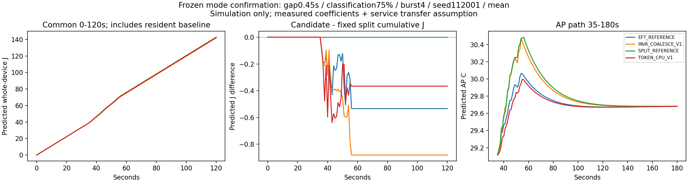

실제 측정 결과가 아닌 PC 예측입니다. 개발에서 사전 지정 입력 조건별 정책을 선택하고 새 seed112001–112003으로 확인했습니다. 전체 27조건 중 개발 기한 적격 정책이 없던 조건은 선택 불가로 남겼습니다. 아래 공동 개선은 J·최고 AP·AP 면적의 비교이며 실기기 정확도 PASS가 아닙니다.
종합 보고서 | 모든 선택·실패·상충 | 27조건 전체 정책 지도
| 목적 | 비교 기준 | 평가 조건 | 모든 기한 충족 | 공동 개선 조건 |
|---|---|---|---|---|
| energy | SPLIT_REFERENCE | 17 | 17 | 10 |
| energy | EFT_REFERENCE | 17 | 17 | 0 |
| thermal | SPLIT_REFERENCE | 17 | 17 | 9 |
| thermal | EFT_REFERENCE | 17 | 17 | 0 |

급한 요청1.5초·일반6초의 전체 기한을 먼저 판정하고 P95 지연은 별도 공개합니다. 숫자를 보고 온도 상한을 새로 만들지 않았으며 S26·BAT·SOC·스로틀 모형으로 확대하지 않습니다. experiment_ready=false.